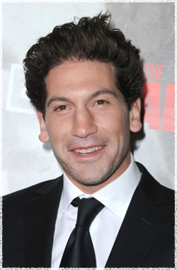

Джон Бернтал
 Шейн Уолш (актёр Джон Бернтал) - полицейский из небольшого городка Кентуки, напарник и лучший друг Рика Граймса. Сопровождал жену Рика и сына в Атланту, чтобы найти убежище.
Джон Бернтал (Jon Bernthal) - американский актёр, родился 20 сентября 1977 года в США в городе Вашингтон.
Джон обучался в России в Московском Художественном Театре, играл в профессиональной Европейской Федерации
бейсбола. Во время нахождения в Москве его заметил директор Института высшего театрального образования и пригласил получить степень магистра искусств.
Закончив обучение в 2002 году, Бернтал выступил в более чем 30 региональных и Бродвейских постановках.
Джон Бернтал снялся в сверхъестественной драме Eastwick (Иствик) и сыграл в минисериале The Pacific (Тихий океан), продюссерами котрого были Том Хэнкс и Стивен Спилберг. В качестве гостя он был приглашён в такие сериалы как: How I Met Your Mother (Как я встретил вашу маму), Law & Order: Special Victims Unit (Закон и порядок. Специальный корпус), Boston Legal (Юристы Бостона) и CSI: Miami (C.S.I.: Майами).
Также можно отметить роли Джона в фильмах: Date Night (Безумное свидание), Ghost Writer (Призрак) Романа Полански, напротив Эван МакГрегор. Дополнительно в его фильмографию входят: World Trade Center (Башни-близнецы) Оливера Стоуна, The Air I Breathe (Воздух, которым я дышу), Day Zero (День Зеро) и роль Аль Капоне в фильме Ночь в музее 2.
Известен зрителям по фильмам и сериалам:
Воздух, которым я дышу (Air I Breathe)
Призрак (Ghost Writer)
Ходячие мертвецы (The Walking Dead)
Как я встретил вашу маму (How I Met Your Mother)
C.S.I.: Майами (CSI: Miami)
Закон и порядок. Преступное намерение (Law & Order: Criminal Intent)